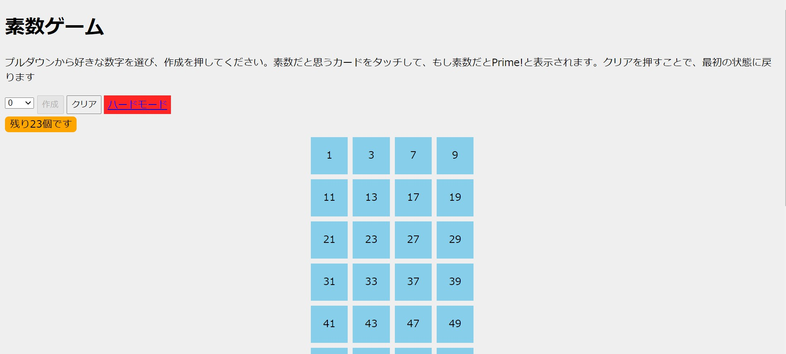

素数ゲーム
21 Nov 2020
小さい素数を覚えたいという動機から作成されたゲームです。数字をタップして、素数であれば色が変わるといういたてシンプルなルールです。ステージをクリアしたときに1つの絵のようになるのが楽しいです。
 {% endblock header %}
{% block content %}
{% endblock header %}
{% block content %}
Panarが過去に学んだことがあるプログラム言語やフレームワークを紹介します。